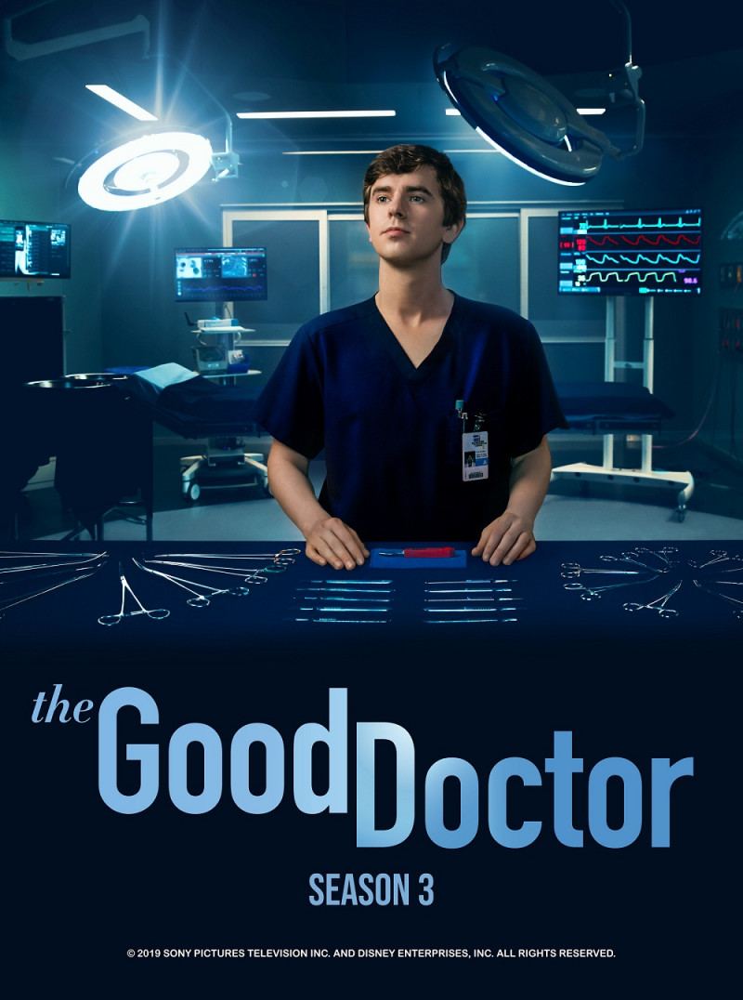
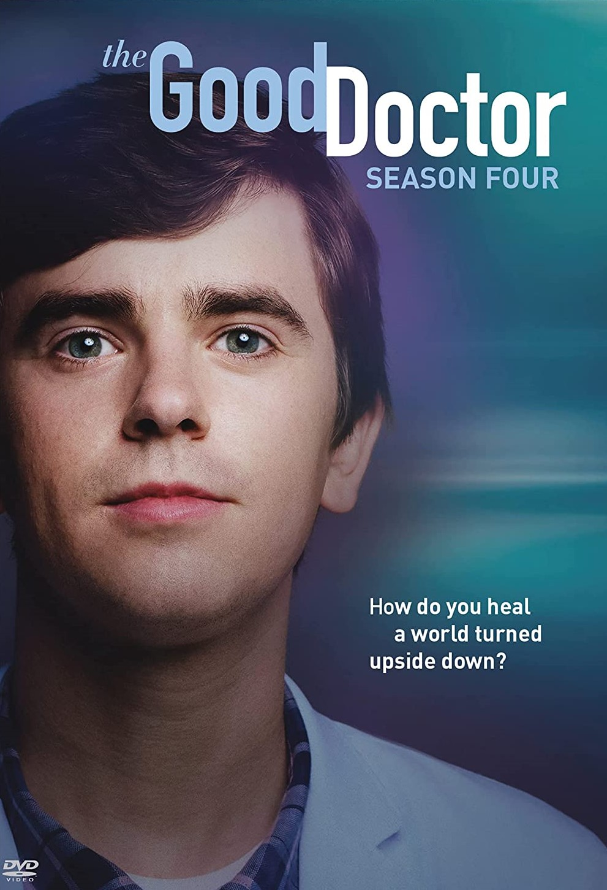

A young surgeon with autism and savant syndrome uses his extraordinary gifts to save lives and challenge skepticism.
2017 ‧ Medical drama ‧ 5 seasons
| Seasons | Description | Release Date |
|---|---|---|
|
Season 1
WATCH NOW
|
A talented surgeon with autism and savant syndrome joins a prestigious hospital, where he faces skepticism from both the patients and staff. | Sep 25, 2017 |
|
Season 2
WATCH NOW
|
As his interpersonal relationships grow stronger, Shaun continues to use his extraordinary gifts to help his surgical patients. | Nov 26, 2018 |
|

Season 3
WATCH NOW
|
Shaun pushes for a radical operation in order to save a newlywed's life. In addition, he and Dr. Lever give dating a shot. | Sep 23, 2019 |
|

Season 4
WATCH NOW
|
Dr. Shaun Murphy must perform a risky surgery on a patient without electricity when the power suddenly goes out at the hospital in Guatemala. | Jun 7, 2021 |
|
Season 5
WATCH NOW
|
Shaun and Lea make a big life decision and are pleasantly surprised by the support they receive from their friends at the hospital | May 16, 2022 |